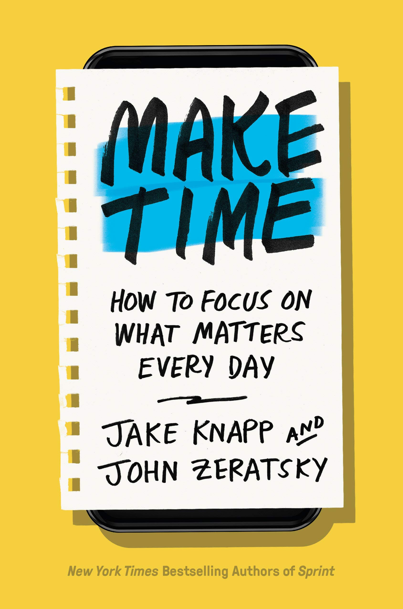

Make Time

By Jake Knapp
My thoughts
Make Time.
Notes
Making Time
Doing more doesn’t help you create time for what matters; it just makes you feel even more frazzled and busy. And when you’re busy day after day, time slides by in a blur.
Make Time is a framework for choosing what you want to focus on, building the energy to do it, and breaking the default cycle so that you can start being more intentional about the way you live your life.
Highlight
Ways to choose your highlight:
- What’s the most pressing thing I have to do today?
- At the end of the day, which Highlight will bring me the most satisfaction?
- When I reflect on today, what will bring me the most joy?
- Bundle up the small tasks and use batch processing to get them all done in one Highlight session.
Burner List
1. Divide Sheet into two columns
2. Put top project in front of page, and list tasks
3. Put second most important task in back, write to-do's underneath
4. Make kitchen sink (other projects)
“The Burner List is disposable and gets scrapped every time I cross off a few finished to-dos. I generally “burn” through a list every few days and then re-create it over and over. This act of re-creating the list is important. It allows me to discard some unfinished tasks that no longer matter, and it also allows me to reconsider which projects belong on the front and back burners right now.”
Creating a Personal Sprint
Set yourself up with a project for ~5 days. Whenever you begin a project, your brain is like a computer starting up, loading relevant information, rules, and processes into your working memory. This “boot up” takes time, and you have to redo it to a certain extent every time you pick up the project.
Design your Days
When you don’t have a plan, you have to decide constantly what to do next, and you might get distracted thinking about all the things you should or could do. But a completely planned day provides the freedom to focus on the moment. Instead of thinking about what to do next, you’re free to focus on how to do it. You can be in the flow, trusting the plan set out by your past self.
Quit when you're done
When should you quit? Instead of trying to answer every email (not happening) or finish every task (dream on), you need to create your own finish line. Perhaps you can find a perfect time of day to stop—in our design sprints, we used 5 p.m. as our cutoff.
Laser
It’s like compound interest. The longer you remain focused on your Highlight, the more engaging you’ll find it and the better work (or play) you’ll do.
- Clean your Devices for Attention
- Invent Deadlines
- Start on paper
- Notice One Breath
- Be Stuck
Stare at the blank screen, or switch to paper, or walk around, but keep your focus on the project at hand. Even when your conscious mind feels frustrated, some quiet part of your brain is processing and making progress. Eventually, you will get unstuck, and then you’ll be glad you didn’t give up.
Energize
Charge your battery with exercise, food, sleep, quiet, and face-to-face time.
To keep a steady energy level throughout the day, try replacing high doses of caffeine (such as a giant cup of brewed coffee) with more frequent low doses. Green tea is a great option.
Studies show that even brief exposure to a forest lowers stress, heart rate, and blood pressure.
Ask yourself what makes you come alive, and then go do that.
Reflect
The Highlight hypothesis is you if you set a single intention at the start of each day, we predict you’ll be more satisfied, joyful, and effective. The Laser hypothesis If you create barriers around the Busy Bandwagon and the Infinity Pools, we predict you’ll focus your attention like a laser beam. The Energize hypothesis If you live a little more like a prehistoric human, we predict you’ll enhance your mental and physical energy.
Finally, before going to bed, you’ll take a few notes. It’s super simple: You’ll decide which tactics you want to continue and which ones you want to refine or drop.
You might also like
- Essentialism: The Disciplined Pursuit of Less
- The Effective Manager